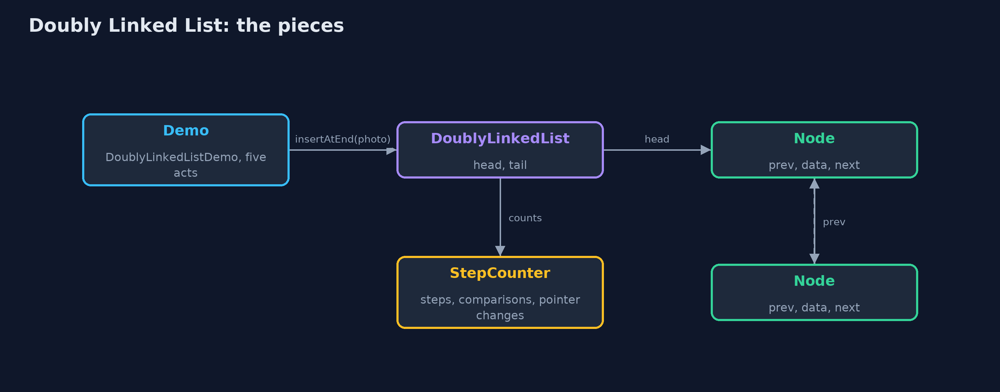
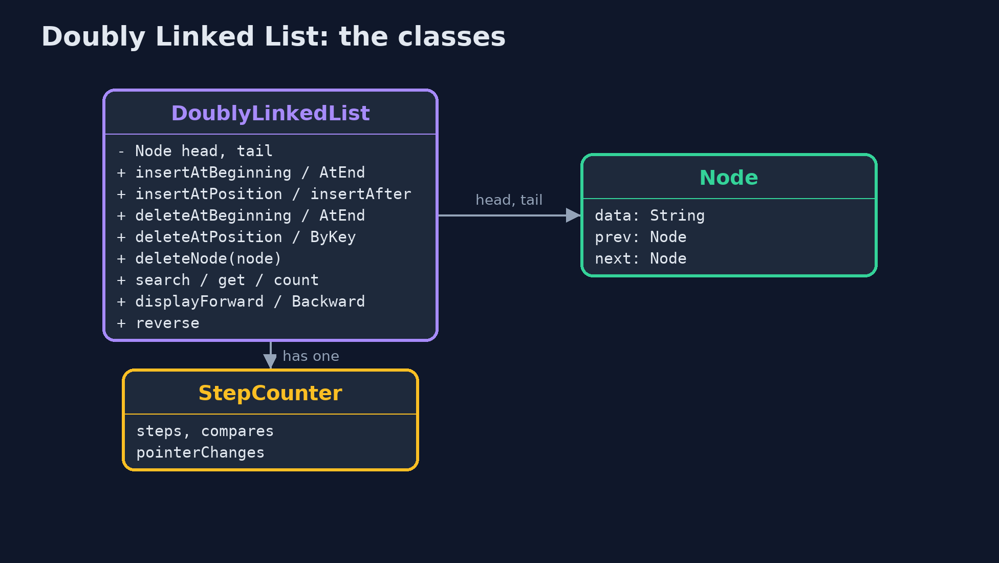
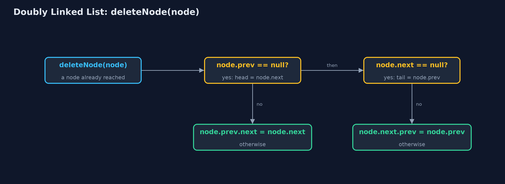
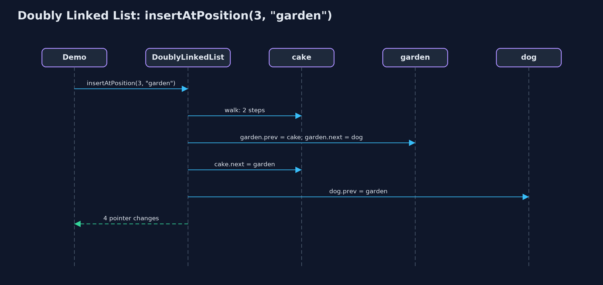

Doubly Linked List
A doubly linked list gives every node a prev pointer as well as a next pointer, so you can walk either way and remove a node you are holding without searching for its neighbour; the price is a second pointer in every node and four pointers to set on every insert.

every node has a prev and a next pointer; the list keeps head and tail
A doubly linked list is a linked list where every node has its data and two pointers: next, to the node after it, and prev, to the node before it. The list remembers both ends, the head and the tail. Being able to go back as well as forward changes three things: you can walk the list in either direction, you can add at either end without walking, and you can remove a node you are already holding by joining its two neighbours, with no search for the node before it. This project builds one by hand, as a C textbook does with struct node { data; struct node *prev, *next; }, with the textbook operations: insertAtBeginning, insertAtEnd, insertAtPosition, deleteAtBeginning, deleteAtEnd, deleteAtPosition, deleteByKey, deleteNode, search, displayForward, displayBackward, count and reverse.
New to data structures? Read Start here first: it explains memory, references and counting steps in ten minutes.
The everyday idea
Think of a train. Every carriage is coupled to the one in front and the one behind. A guard in any carriage can step forwards or backwards one carriage at a time. To take a carriage out of the middle, you uncouple it from both neighbours and couple those neighbours to each other: two couplings, and the rest of the train does not move. To add one, there are four couplings to make, and forgetting one leaves a carriage that can be reached from one direction but not the other.
The worked example: A photo viewer with Previous and Next
A photo viewer shows one photo at a time, with Previous and Next buttons. The album is beach, cake, dog, forest and mountain. The viewer must go back as easily as forward, add new photos at the end as they are taken, and delete the photo on screen. The demo first tries this with one-way pointers, then builds the doubly linked version, inserts and deletes at both ends and in the middle, forgets one pointer during an insertion, and reverses the list.
Why it exists
With one-way pointers, Previous is a problem: from "mountain", the only way back to "forest" is to start again at "beach" and walk forward, three steps, and further for longer albums. Deleting the photo on screen has the same problem, because the node before it must be found to point past it. A second pointer in every node makes both one step.
New words
| Word | What it means here |
|---|---|
| node | One element of the list: its data (a photo), a prev pointer and a next pointer. |
| prev | The pointer to the node before. The head's prev is null. |
| next | The pointer to the node after. The tail's next is null. |
| head and tail | The first and the last node. The list keeps both, so either end is one step away. |
| traverse | To visit nodes one by one by following next (or prev) pointers. Each move is one step; the demo counts them. |
| pointer change | Setting one head, tail, prev or next pointer to a different node. An insertion in the middle takes four; a deletion takes two. |
What you will see, act by act
Run the demo and it tells the story in 5 acts, printing the real numbers that the tests check:
./gradlew run| Act | What it shows |
|---|---|
| 1. A viewer with next pointers only | With next pointers only, Previous from mountain walks 3 steps from beach to reach forest; deleting the photo on screen has the same problem. |
| 2. Pointers both ways, and both ends | Built with insertAtEnd through tail: 0 steps; displayed forward from head and backward from tail. |
| 3. Insertion and deletion at both ends and in the middle | insertAtBeginning and insertAtEnd: 3 pointers, 0 steps; insertAtPosition(3): 2 steps, 4 pointers; deleteAtEnd: 0 steps, 2 pointers; deleteByKey: 3 comparisons, 2 pointers. |
| 4. The pointer nobody set | An insertion that sets only 3 of its 4 pointers: forwards reaches 6 photos, backwards only 5; deleting the only photo sets both head and tail to null. |
| 5. Reversal, and the bill | reverse() swaps prev and next in 5 nodes and swaps head and tail: 12 pointer changes, no data moved; every node carries one more pointer than a singly linked list. |
Each act is drawn step by step in the explained walkthrough and in the animation.
The operations, and what they cost
Time is given for the best, average and worst case in Big-O notation (START-HERE.md explains it by counting steps); the last column is what the demo actually counted, so every formula can be checked against a real number.
| Operation | What it does | Time: best / average / worst | Extra space | Steps counted in the demo |
|---|---|---|---|---|
| Display forward / backward | Follow next from head, or prev from tail | O(n) / O(n) / O(n) | O(1) | 5 steps each way for 5 photos |
| Count | Traverse and count the nodes | O(n) / O(n) / O(n) | O(1) | one step per node |
| Insert at beginning | newNode.next = head; head.prev = newNode; head = newNode | O(1) / O(1) / O(1) | O(1) | 3 pointer changes |
| Insert at end | newNode.prev = tail; tail.next = newNode; tail = newNode | O(1) / O(1) / O(1) | O(1) | 0 steps, 3 pointer changes |
| Insert at position | Walk to the node before, then set 4 pointers | O(1) at the ends / O(n) / O(n) | O(1) | 2 steps, 4 pointer changes |
| Delete at beginning / at end | Move head on, or tail back; clear the new end's pointer | O(1) / O(1) / O(1) | O(1) | 0 steps, 2 pointer changes |
| Delete a node already reached | node.prev.next = node.next; node.next.prev = node.prev | O(1) / O(1) / O(1) | O(1) | 0 steps, 2 pointer changes |
| Delete by key / at position | Walk to the node, then delete it as above | O(1) at the head / O(n) / O(n) | O(1) | 3 comparisons, 2 pointer changes |
| Search / get | Compare each node's data / follow pos next pointers | O(1) / O(n) / O(n) | O(1) | one comparison per node looked at |
| Reverse | Swap prev and next in every node, then swap head and tail | O(n) / O(n) / O(n) | O(1) | 12 pointer changes for 5 nodes |
Extra space is the memory an operation needs besides the structure itself. A loop needs a fixed amount, O(1); a recursive operation needs one call-stack frame for every call still waiting, so its extra space is the depth of the recursion.
The operations in code
Insertion at the end
/** Insertion at the end, through the tail pointer: no traversal. O(1). */
public Node insertAtEnd(String data) {
Node newNode = new Node(data);
if (tail == null) {
head = newNode;
tail = newNode;
steps.pointer(2);
} else {
newNode.prev = tail; // the new node's prev is the old last node
tail.next = newNode; // the old last node's next is the new node
tail = newNode;
steps.pointer(3);
}
return newNode;
}Through the tail pointer: the new node's prev is the old tail, the old tail's next is the new node, and tail moves. No walking, so O(1). An empty list is the special case: the new node is both head and tail.
Insertion after a node
/**
* Inserts a new node after {@code node}. Four pointers: the new node's {@code prev} and
* {@code next}, then {@code node.next} and the following node's {@code prev}. O(1).
*/
public Node insertAfter(Node node, String data) {
if (node == tail) {
return insertAtEnd(data);
}
Node following = node.next;
Node newNode = new Node(data);
newNode.prev = node; // 1
newNode.next = following; // 2
node.next = newNode; // 3
following.prev = newNode; // 4
steps.pointer(4);
return newNode;
}Four pointers: the new node's prev and next, then the node before it and the node after it are pointed at the new node. Forgetting the fourth, following.prev, leaves a list that looks right walking forwards but skips the new node walking backwards.
Deletion of a node
/**
* Deletes a node already reached: its predecessor's {@code next} and its successor's
* {@code prev} are set past it (or head and tail, at the ends). O(1): the node knows its
* predecessor, so no search is needed.
*/
public void deleteNode(Node node) {
if (node.prev == null) {
head = node.next; // deleting the first node
} else {
node.prev.next = node.next;
}
if (node.next == null) {
tail = node.prev; // deleting the last node
} else {
node.next.prev = node.prev;
}
steps.pointer(2);
}The node knows both neighbours, so no search is needed: the one before is pointed past it with next, the one after with prev. At the ends, head or tail moves instead. Every deletion, at the beginning, the end, a position or by key, finishes here.
Display backward
/** Display backward: follow prev pointers from tail to null. O(n); impossible in a singly linked list. */
public String displayBackward() {
StringBuilder s = new StringBuilder("tail -> ");
for (Node current = tail; current != null; current = current.prev) {
s.append(current.data).append(current.prev != null ? " <-> " : "");
steps.step();
}
return s.append(" <- head").toString().replace("tail -> <- head", "tail -> null <- head");
}Start at tail and follow prev pointers to null. A singly linked list cannot do this without first reversing itself or using a stack.
Reversal
/**
* Reverses the list in place: swap every node's prev and next, then swap head and tail. Two
* pointer changes per node, O(n) time, O(1) extra space.
*/
public void reverse() {
Node current = head;
while (current != null) {
Node t = current.next;
current.next = current.prev;
current.prev = t;
steps.pointer(2);
current = t; // the old next, now stored in prev
}
Node t = head;
head = tail;
tail = t;
steps.pointer(2);
}Every node already has pointers both ways, so reversing only swaps each node's prev and next, then swaps head and tail. Note current = t: after the swap, the old next is in prev, so the walk continues through the saved value.
Compared with related structures
How a doubly linked list compares with the structures it is usually weighed against (n nodes):
| Operation | Doubly linked list | Singly linked list | Dynamic array |
|---|---|---|---|
| Access position i | O(n) | O(n) | O(1) |
| Insert / delete at the beginning | O(1) | O(1) | O(n) shifts |
| Insert at the end | O(1) with tail | O(n) (O(1) with a tail) | O(1) amortised |
| Delete at the end | O(1): tail.prev | O(n): find the second-to-last | O(1) |
| Delete a node already reached | O(1) | O(n): find the node before | O(n) shifts |
| Walk backwards | yes | no | yes |
| Pointers per node | 2 (prev, next) | 1 (next) | none |
| Pointers set by an insertion in the middle | 4 | 2 | none, but O(n) shifts |
The code
src/main/java/com/jk/explore/doublylinkedlist/
├── DoublyLinkedList.java A doubly linked list: every node has a {@code prev} and a {@code next} pointer, and the list keeps pointers to both ends, {@code head} and {@code tail}
├── DoublyLinkedListDemo.java Tells the story of the doubly linked list in five acts, printing the real step counts
├── Lines.java The demo's printed lines, kept in one {@code StringBuilder} so the tests can check them
├── Node.java A node of a doubly linked list: its data, a pointer to the previous node and a pointer to the next node, as {@code struct node { data; struct node prev, next; }} in a C textbook
└── StepCounter.java Counts what a doubly-linked-list operation costs: traversal steps (following one next or prev pointer), comparisons (checking one node's data against a key), and pointer changes (setting one head, tail, next or prev pointer)Test
./gradlew test17 tests in DemoRunsTest, DoublyLinkedListTest. Every number the demo prints is asserted, and nothing depends on the clock, so every run gives the same result.
Common mistakes
| The mistake | What goes wrong | The fix |
|---|---|---|
| Forgetting one of the four pointers of an insertion | Forwards and backwards walks disagree: one direction skips the new node. | Set all four: newNode.prev, newNode.next, node.next, following.prev. |
| Not updating head or tail at the ends | Deleting the last node leaves tail pointing at a deleted node; deleting the only node leaves head or tail behind. | When node.prev is null, move head; when node.next is null, move tail. |
| Reversing without swapping head and tail | Every node is reversed, but head still points at what is now the last node. | After the loop, swap head and tail. |
Walking on with current.next after swapping in reverse | After the swap, current.next is the old prev, so the loop goes backwards and stops at once. | Save the old next before the swap and continue from it. |
Try it yourself
- Easy. Write
String getFromEnd(int k)that returns the data of the node k places from the end (k = 0 is the tail). What is its time complexity? - Medium. Write
void moveToFront(Node node)that moves a node already reached to the head in O(1). Where is this used? - Harder. Make
get(pos)walk from whichever end is nearer. What extra field does the list need, which operations must maintain it, and what is the worst case now?
The answers are in docs/exercises.md, below the questions, so they are not given away.
When to use it
- You need to move backwards as well as forwards.
- You remove or insert next to a node you already hold, such as the item on screen or the item just used.
- You add and remove at both ends: the list works as a queue from either side.
When not to
- You only ever go forwards: a singly linked list does the job with one pointer per node.
- You read by position: position n is still a walk.
- Memory is tight: every node carries two pointers as well as its value.
Where you have already met this
- A browser's Back and Forward history, a photo gallery, a music player's previous and next track.
java.util.LinkedListis a doubly linked list with a head and a tail.- An LRU cache (later in this course) keeps a doubly linked list so it can move any entry to the front in one step.
Technologies and versions
| Technology | Version | Used for |
|---|---|---|
| Java | 25 | the code (toolchain set in build.gradle; Gradle fetches JDK 25 if it is missing) |
| Gradle | 9.8.0 (wrapper) | build and run, nothing to install |
| JUnit | 6.1.3 | the tests |
| videokit | course tool | the narrated video and animation: Piper en_US-amy-medium, speed 0.8, longer pauses (the amy-slow voice) |
Learning material
| Document | What it is for |
|---|---|
| Start here | the ideas every project relies on |
| Problem statement | the situation and what the project must show |
| Prerequisites | what you need to know first |
| Doubly Linked List, explained | every act, picture by picture |
| Animated walkthrough | the structure changing step by step, narrated |
| Cheat sheet | the whole structure on one page |
| Exercises and answers | practice, easy to harder |
| Session guide | a one-hour lesson |
| Specification | what this project must be true of |
How the pieces fit
The list keeps head and tail; every node points to its neighbours both ways.

The classes
DoublyLinkedList holds head and tail; each Node holds data, prev and next.

How the data moves
Two pointer changes; head or tail move at the ends.

Who calls whom, in order
Walk two steps to cake, then four pointers.

Video
video/doubly-linked-list-explained.mp4 (with .m4a audio and .srt subtitles) is built by video/build_video.sh. Rendered media is not committed.
Where this sits
Part of the data structures course, in arrays-and-lists.